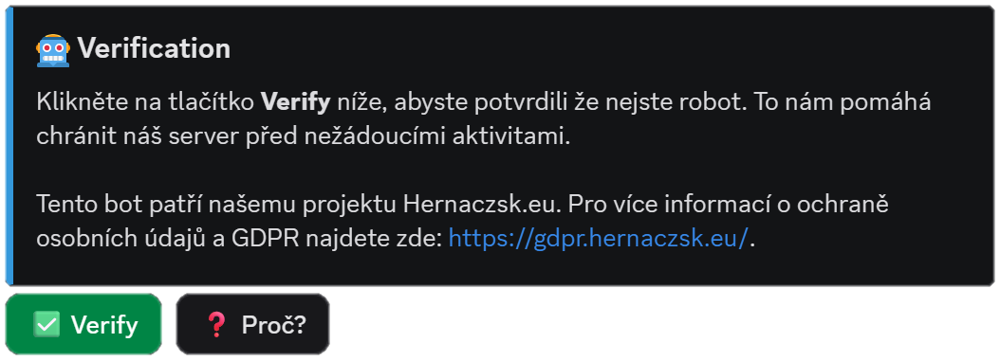

Support system
Ticket & Moderation Bot
A structured support system for a game-server hosting community. Members open tickets through category buttons — server issues, upgrades, reports, business inquiries — that launch modal forms instead of vague DMs, so staff get the server IP, a description, and a timeline right away. A permission-gated /clear command and full audit logging of channel and role changes round it out.
